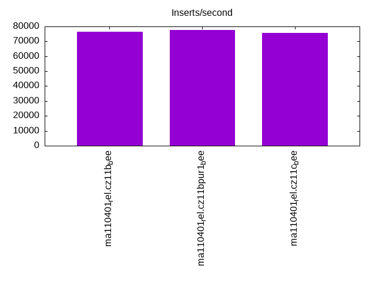
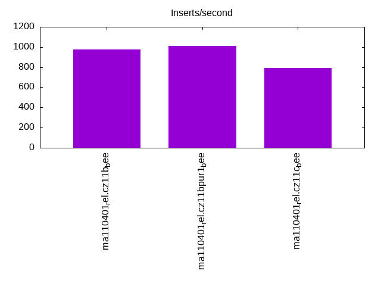
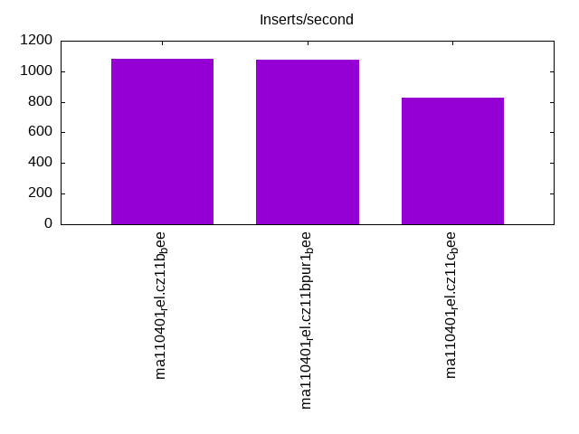
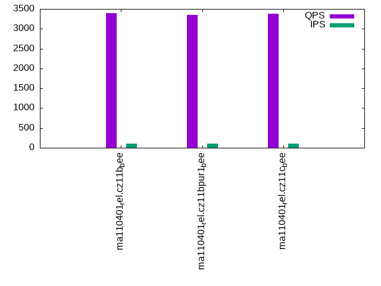
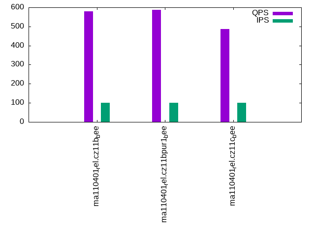
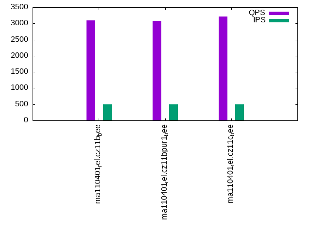
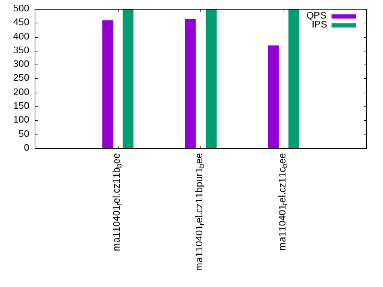
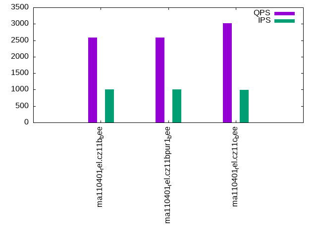
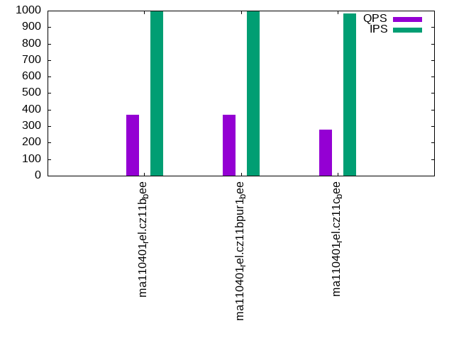

This is a report for the insert benchmark with 800M docs and 1 client(s). It is generated by scripts (bash, awk, sed) and Tufte might not be impressed. An overview of the insert benchmark is here and a short update is here. Below, by DBMS, I mean DBMS+version.config. An example is my8020.c10b40 where my means MySQL, 8020 is version 8.0.20 and c10b40 is the name for the configuration file.
The test server has 8 AMD cores, 16G RAM and an NVMe SSD. It is described here as the Beelink. The benchmark was run with 1 client and there were 1 or 3 connections per client (1 for queries or inserts without rate limits, 1+1 for rate limited inserts+deletes). It uses 1 table. It loads 800M rows per table without secondary indexes, creates 3 secondary indexes per table, then inserts 4m+1m rows per table with a delete per insert to avoid growing the table. It then does 6 read+write tests for 1800s each that do queries as fast as possible with 100,100,500,500,1000,1000 inserts/s and the same for deletes/s per client concurrent with the queries. The database is larger than memory. Clients and the DBMS share one server. The per-database configs are in the per-database subdirectories here.
The tested DBMS are:
The numbers are inserts/s for l.i0, l.i1 and l.i2, indexed docs (or rows) /s for l.x and queries/s for qr100, qp100 thru qr1000, qp1000" The values are the average rate over the entire test for inserts (IPS) and queries (QPS). The range of values for IPS and QPS is split into 3 parts: bottom 25%, middle 50%, top 25%. Values in the bottom 25% have a red background, values in the top 25% have a green background and values in the middle have no color. A gray background is used for values that can be ignored because the DBMS did not sustain the target insert rate. Red backgrounds are not used when the minimum value is within 80% of the max value.
| dbms | l.i0 | l.x | l.i1 | l.i2 | qr100 | qp100 | qr500 | qp500 | qr1000 | qp1000 |
|---|---|---|---|---|---|---|---|---|---|---|
| ma110401_rel.cz11b_bee | 76431 | 97931 | 978 | 1081 | 3393 | 579 | 3098 | 460 | 2584 | 367 |
| ma110401_rel.cz11bpur1_bee | 77783 | 97811 | 1013 | 1075 | 3353 | 586 | 3085 | 464 | 2586 | 369 |
| ma110401_rel.cz11c_bee | 75636 | 97943 | 795 | 830 | 3375 | 487 | 3213 | 369 | 3022 | 281 |
This table has relative throughput, throughput for the DBMS relative to the DBMS in the first line, using the absolute throughput from the previous table. Values less than 0.95 have a yellow background. Values greater than 1.05 have a blue background.
| dbms | l.i0 | l.x | l.i1 | l.i2 | qr100 | qp100 | qr500 | qp500 | qr1000 | qp1000 |
|---|---|---|---|---|---|---|---|---|---|---|
| ma110401_rel.cz11b_bee | 1.00 | 1.00 | 1.00 | 1.00 | 1.00 | 1.00 | 1.00 | 1.00 | 1.00 | 1.00 |
| ma110401_rel.cz11bpur1_bee | 1.02 | 1.00 | 1.04 | 0.99 | 0.99 | 1.01 | 1.00 | 1.01 | 1.00 | 1.01 |
| ma110401_rel.cz11c_bee | 0.99 | 1.00 | 0.81 | 0.77 | 0.99 | 0.84 | 1.04 | 0.80 | 1.17 | 0.77 |
This lists the average rate of inserts/s for the tests that do inserts concurrent with queries. For such tests the query rate is listed in the table above. The read+write tests are setup so that the insert rate should match the target rate every second. Cells that are not at least 95% of the target have a red background to indicate a failure to satisfy the target.
| dbms | qr100.L1 | qp100.L2 | qr500.L3 | qp500.L4 | qr1000.L5 | qp1000.L6 |
|---|---|---|---|---|---|---|
| ma110401_rel.cz11b_bee | 100 | 100 | 499 | 499 | 999 | 999 |
| ma110401_rel.cz11bpur1_bee | 100 | 100 | 499 | 499 | 999 | 999 |
| ma110401_rel.cz11c_bee | 100 | 100 | 499 | 499 | 993 | 982 |
| target | 100 | 100 | 500 | 500 | 1000 | 1000 |
l.i0: load without secondary indexes. Graphs for performance per 1-second interval are here.
Average throughput:
Insert response time histogram: each cell has the percentage of responses that take <= the time in the header and max is the max response time in seconds. For the max column values in the top 25% of the range have a red background and in the bottom 25% of the range have a green background. The red background is not used when the min value is within 80% of the max value.
| dbms | 256us | 1ms | 4ms | 16ms | 64ms | 256ms | 1s | 4s | 16s | gt | max |
|---|---|---|---|---|---|---|---|---|---|---|---|
| ma110401_rel.cz11b_bee | 0.195 | 99.544 | 0.216 | 0.040 | 0.005 | 0.198 | |||||
| ma110401_rel.cz11bpur1_bee | 0.445 | 99.296 | 0.213 | 0.042 | 0.005 | 0.253 | |||||
| ma110401_rel.cz11c_bee | 0.410 | 99.318 | 0.204 | 0.044 | 0.024 | nonzero | 0.340 |
Performance metrics for the DBMS listed above. Some are normalized by throughput, others are not. Legend for results is here.
ips qps rps rmbps wps wmbps rpq rkbpq wpi wkbpi csps cpups cspq cpupq dbgb1 dbgb2 rss maxop p50 p99 tag 76431 0 585 2.3 385.5 22.4 0.008 0.031 0.005 0.300 12003 25.5 0.157 27 52.6 68.4 10.3 0.198 76515 66726 ma110401_rel.cz11b_bee 77783 0 595 2.3 392.2 22.8 0.008 0.031 0.005 0.300 11531 25.4 0.148 26 52.6 68.4 10.3 0.253 77814 67523 ma110401_rel.cz11bpur1_bee 75636 0 579 2.3 79.4 22.1 0.008 0.031 0.001 0.300 11855 25.2 0.157 27 52.6 68.4 10.3 0.340 77114 58633 ma110401_rel.cz11c_bee
l.x: create secondary indexes.
Average throughput:
Performance metrics for the DBMS listed above. Some are normalized by throughput, others are not. Legend for results is here.
ips qps rps rmbps wps wmbps rpq rkbpq wpi wkbpi csps cpups cspq cpupq dbgb1 dbgb2 rss maxop p50 p99 tag 97931 0 630 98.9 718.3 110.0 0.006 1.035 0.007 1.150 3284 11.9 0.034 10 119.9 135.7 10.3 0.003 NA NA ma110401_rel.cz11b_bee 97811 0 638 98.8 731.1 110.0 0.007 1.035 0.007 1.151 3294 11.9 0.034 10 119.9 135.7 10.3 0.002 NA NA ma110401_rel.cz11bpur1_bee 97943 0 317 98.9 288.3 110.1 0.003 1.034 0.003 1.151 2547 12.0 0.026 10 119.9 135.7 10.3 0.002 NA NA ma110401_rel.cz11c_bee
l.i1: continue load after secondary indexes created with 50 inserts per transaction. Graphs for performance per 1-second interval are here.
Average throughput:
Insert response time histogram: each cell has the percentage of responses that take <= the time in the header and max is the max response time in seconds. For the max column values in the top 25% of the range have a red background and in the bottom 25% of the range have a green background. The red background is not used when the min value is within 80% of the max value.
| dbms | 256us | 1ms | 4ms | 16ms | 64ms | 256ms | 1s | 4s | 16s | gt | max |
|---|---|---|---|---|---|---|---|---|---|---|---|
| ma110401_rel.cz11b_bee | 77.763 | 22.236 | 0.001 | 4.258 | |||||||
| ma110401_rel.cz11bpur1_bee | 80.478 | 19.516 | 0.005 | 0.001 | 3.651 | ||||||
| ma110401_rel.cz11c_bee | 70.329 | 28.871 | 0.799 | 0.001 | 6.793 |
Delete response time histogram: each cell has the percentage of responses that take <= the time in the header and max is the max response time in seconds. For the max column values in the top 25% of the range have a red background and in the bottom 25% of the range have a green background. The red background is not used when the min value is within 80% of the max value.
| dbms | 256us | 1ms | 4ms | 16ms | 64ms | 256ms | 1s | 4s | 16s | gt | max |
|---|---|---|---|---|---|---|---|---|---|---|---|
| ma110401_rel.cz11b_bee | 3.148 | 89.179 | 7.673 | 0.001 | 4.147 | ||||||
| ma110401_rel.cz11bpur1_bee | 5.929 | 86.510 | 7.559 | 0.001 | 0.001 | 3.593 | |||||
| ma110401_rel.cz11c_bee | 2.756 | 93.695 | 3.097 | 0.450 | 0.001 | 6.636 |
Performance metrics for the DBMS listed above. Some are normalized by throughput, others are not. Legend for results is here.
ips qps rps rmbps wps wmbps rpq rkbpq wpi wkbpi csps cpups cspq cpupq dbgb1 dbgb2 rss maxop p50 p99 tag 978 0 6296 97.8 5847.9 169.9 6.439 102.390 5.980 177.928 55315 10.6 56.565 867 144.4 160.2 10.1 4.258 949 599 ma110401_rel.cz11b_bee 1013 0 6518 101.2 6039.4 176.0 6.435 102.330 5.962 177.944 57233 10.8 56.504 853 144.4 160.2 10.1 3.651 999 599 ma110401_rel.cz11bpur1_bee 795 0 5033 88.3 4251.2 139.9 6.329 113.696 5.346 180.208 54230 12.6 68.197 1268 144.4 160.2 10.1 6.793 799 350 ma110401_rel.cz11c_bee
l.i2: continue load after secondary indexes created with 5 inserts per transaction. Graphs for performance per 1-second interval are here.
Average throughput:
Insert response time histogram: each cell has the percentage of responses that take <= the time in the header and max is the max response time in seconds. For the max column values in the top 25% of the range have a red background and in the bottom 25% of the range have a green background. The red background is not used when the min value is within 80% of the max value.
| dbms | 256us | 1ms | 4ms | 16ms | 64ms | 256ms | 1s | 4s | 16s | gt | max |
|---|---|---|---|---|---|---|---|---|---|---|---|
| ma110401_rel.cz11b_bee | 0.003 | 68.868 | 29.822 | 0.546 | 0.762 | 0.155 | |||||
| ma110401_rel.cz11bpur1_bee | 0.003 | 68.743 | 29.927 | 0.566 | 0.762 | 0.135 | |||||
| ma110401_rel.cz11c_bee | 40.135 | 57.491 | 1.593 | 0.780 | 0.002 | 0.400 |
Delete response time histogram: each cell has the percentage of responses that take <= the time in the header and max is the max response time in seconds. For the max column values in the top 25% of the range have a red background and in the bottom 25% of the range have a green background. The red background is not used when the min value is within 80% of the max value.
| dbms | 256us | 1ms | 4ms | 16ms | 64ms | 256ms | 1s | 4s | 16s | gt | max |
|---|---|---|---|---|---|---|---|---|---|---|---|
| ma110401_rel.cz11b_bee | 0.009 | 77.700 | 21.218 | 0.376 | 0.697 | 0.155 | |||||
| ma110401_rel.cz11bpur1_bee | 0.007 | 77.549 | 21.341 | 0.403 | 0.700 | 0.132 | |||||
| ma110401_rel.cz11c_bee | 72.166 | 26.337 | 0.874 | 0.622 | 0.001 | 0.384 |
Performance metrics for the DBMS listed above. Some are normalized by throughput, others are not. Legend for results is here.
ips qps rps rmbps wps wmbps rpq rkbpq wpi wkbpi csps cpups cspq cpupq dbgb1 dbgb2 rss maxop p50 p99 tag 1081 0 6696 100.7 5725.4 168.1 6.194 95.414 5.296 159.190 59109 13.4 54.680 992 144.4 160.2 10.1 0.155 1094 799 ma110401_rel.cz11b_bee 1075 0 6665 100.3 5697.7 167.7 6.199 95.502 5.299 159.676 58578 13.4 54.481 997 144.4 160.2 10.1 0.135 1094 794 ma110401_rel.cz11bpur1_bee 830 0 5106 79.1 4308.0 128.7 6.153 97.571 5.192 158.849 52637 14.8 63.434 1427 144.4 160.2 8.8 0.400 869 369 ma110401_rel.cz11c_bee
qr100.L1: range queries with 100 insert/s per client. Graphs for performance per 1-second interval are here.
Average throughput:
Query response time histogram: each cell has the percentage of responses that take <= the time in the header and max is the max response time in seconds. For max values in the top 25% of the range have a red background and in the bottom 25% of the range have a green background. The red background is not used when the min value is within 80% of the max value.
| dbms | 256us | 1ms | 4ms | 16ms | 64ms | 256ms | 1s | 4s | 16s | gt | max |
|---|---|---|---|---|---|---|---|---|---|---|---|
| ma110401_rel.cz11b_bee | 47.900 | 51.884 | 0.189 | 0.024 | 0.002 | 0.001 | 0.091 | ||||
| ma110401_rel.cz11bpur1_bee | 42.554 | 57.226 | 0.192 | 0.025 | 0.002 | 0.001 | 0.089 | ||||
| ma110401_rel.cz11c_bee | 45.429 | 54.332 | 0.199 | 0.036 | 0.003 | 0.001 | 0.137 |
Insert response time histogram: each cell has the percentage of responses that take <= the time in the header and max is the max response time in seconds. For max values in the top 25% of the range have a red background and in the bottom 25% of the range have a green background. The red background is not used when the min value is within 80% of the max value.
| dbms | 256us | 1ms | 4ms | 16ms | 64ms | 256ms | 1s | 4s | 16s | gt | max |
|---|---|---|---|---|---|---|---|---|---|---|---|
| ma110401_rel.cz11b_bee | 0.278 | 93.944 | 5.778 | 0.133 | |||||||
| ma110401_rel.cz11bpur1_bee | 0.167 | 94.111 | 5.722 | 0.126 | |||||||
| ma110401_rel.cz11c_bee | 93.417 | 6.583 | 0.185 |
Delete response time histogram: each cell has the percentage of responses that take <= the time in the header and max is the max response time in seconds. For max values in the top 25% of the range have a red background and in the bottom 25% of the range have a green background. The red background is not used when the min value is within 80% of the max value.
| dbms | 256us | 1ms | 4ms | 16ms | 64ms | 256ms | 1s | 4s | 16s | gt | max |
|---|---|---|---|---|---|---|---|---|---|---|---|
| ma110401_rel.cz11b_bee | 44.444 | 51.056 | 4.500 | 0.120 | |||||||
| ma110401_rel.cz11bpur1_bee | 45.306 | 50.222 | 4.472 | 0.122 | |||||||
| ma110401_rel.cz11c_bee | 27.833 | 67.250 | 4.917 | 0.160 |
Performance metrics for the DBMS listed above. Some are normalized by throughput, others are not. Legend for results is here.
ips qps rps rmbps wps wmbps rpq rkbpq wpi wkbpi csps cpups cspq cpupq dbgb1 dbgb2 rss maxop p50 p99 tag 100 3393 638 9.9 274.4 8.6 0.188 2.995 2.750 88.561 16777 13.1 4.944 309 144.4 160.2 10.1 0.091 3388 2637 ma110401_rel.cz11b_bee 100 3353 638 9.9 271.5 8.6 0.190 3.031 2.721 88.023 16610 13.0 4.954 310 144.4 160.2 10.1 0.089 3356 2557 ma110401_rel.cz11bpur1_bee 100 3375 628 10.4 271.0 8.6 0.186 3.154 2.719 88.391 17150 13.5 5.081 320 144.4 160.2 9.8 0.137 3372 2221 ma110401_rel.cz11c_bee
qp100.L2: point queries with 100 insert/s per client. Graphs for performance per 1-second interval are here.
Average throughput:
Query response time histogram: each cell has the percentage of responses that take <= the time in the header and max is the max response time in seconds. For max values in the top 25% of the range have a red background and in the bottom 25% of the range have a green background. The red background is not used when the min value is within 80% of the max value.
| dbms | 256us | 1ms | 4ms | 16ms | 64ms | 256ms | 1s | 4s | 16s | gt | max |
|---|---|---|---|---|---|---|---|---|---|---|---|
| ma110401_rel.cz11b_bee | 0.247 | 98.701 | 0.656 | 0.391 | 0.005 | 0.085 | |||||
| ma110401_rel.cz11bpur1_bee | 0.232 | 99.015 | 0.360 | 0.388 | 0.005 | 0.084 | |||||
| ma110401_rel.cz11c_bee | 0.029 | 97.144 | 2.387 | 0.436 | 0.004 | 0.140 |
Insert response time histogram: each cell has the percentage of responses that take <= the time in the header and max is the max response time in seconds. For max values in the top 25% of the range have a red background and in the bottom 25% of the range have a green background. The red background is not used when the min value is within 80% of the max value.
| dbms | 256us | 1ms | 4ms | 16ms | 64ms | 256ms | 1s | 4s | 16s | gt | max |
|---|---|---|---|---|---|---|---|---|---|---|---|
| ma110401_rel.cz11b_bee | 93.611 | 6.389 | 0.103 | ||||||||
| ma110401_rel.cz11bpur1_bee | 97.278 | 2.722 | 0.102 | ||||||||
| ma110401_rel.cz11c_bee | 89.500 | 10.500 | 0.180 |
Delete response time histogram: each cell has the percentage of responses that take <= the time in the header and max is the max response time in seconds. For max values in the top 25% of the range have a red background and in the bottom 25% of the range have a green background. The red background is not used when the min value is within 80% of the max value.
| dbms | 256us | 1ms | 4ms | 16ms | 64ms | 256ms | 1s | 4s | 16s | gt | max |
|---|---|---|---|---|---|---|---|---|---|---|---|
| ma110401_rel.cz11b_bee | 13.333 | 83.611 | 3.056 | 0.099 | |||||||
| ma110401_rel.cz11bpur1_bee | 42.750 | 56.111 | 1.139 | 0.100 | |||||||
| ma110401_rel.cz11c_bee | 6.139 | 89.056 | 4.806 | 0.182 |
Performance metrics for the DBMS listed above. Some are normalized by throughput, others are not. Legend for results is here.
ips qps rps rmbps wps wmbps rpq rkbpq wpi wkbpi csps cpups cspq cpupq dbgb1 dbgb2 rss maxop p50 p99 tag 100 579 5774 90.2 755.4 21.8 9.969 159.400 7.569 223.314 18484 5.3 31.913 732 144.4 160.2 10.1 0.085 591 463 ma110401_rel.cz11b_bee 100 586 5826 91.0 758.2 21.9 9.951 159.113 7.598 224.778 18683 5.4 31.909 738 144.4 160.2 10.1 0.084 591 479 ma110401_rel.cz11bpur1_bee 100 487 4972 78.8 736.8 21.5 10.203 165.531 7.383 220.483 19667 6.2 40.358 1018 144.4 160.2 9.0 0.140 495 384 ma110401_rel.cz11c_bee
qr500.L3: range queries with 500 insert/s per client. Graphs for performance per 1-second interval are here.
Average throughput:
Query response time histogram: each cell has the percentage of responses that take <= the time in the header and max is the max response time in seconds. For max values in the top 25% of the range have a red background and in the bottom 25% of the range have a green background. The red background is not used when the min value is within 80% of the max value.
| dbms | 256us | 1ms | 4ms | 16ms | 64ms | 256ms | 1s | 4s | 16s | gt | max |
|---|---|---|---|---|---|---|---|---|---|---|---|
| ma110401_rel.cz11b_bee | 42.379 | 57.147 | 0.397 | 0.057 | 0.010 | 0.010 | 0.086 | ||||
| ma110401_rel.cz11bpur1_bee | 39.149 | 60.386 | 0.385 | 0.060 | 0.010 | 0.010 | 0.088 | ||||
| ma110401_rel.cz11c_bee | 45.459 | 54.141 | 0.308 | 0.069 | 0.014 | 0.009 | 0.129 |
Insert response time histogram: each cell has the percentage of responses that take <= the time in the header and max is the max response time in seconds. For max values in the top 25% of the range have a red background and in the bottom 25% of the range have a green background. The red background is not used when the min value is within 80% of the max value.
| dbms | 256us | 1ms | 4ms | 16ms | 64ms | 256ms | 1s | 4s | 16s | gt | max |
|---|---|---|---|---|---|---|---|---|---|---|---|
| ma110401_rel.cz11b_bee | 0.222 | 91.161 | 8.617 | 0.129 | |||||||
| ma110401_rel.cz11bpur1_bee | 9.917 | 81.856 | 8.228 | 0.127 | |||||||
| ma110401_rel.cz11c_bee | 91.278 | 8.722 | 0.217 |
Delete response time histogram: each cell has the percentage of responses that take <= the time in the header and max is the max response time in seconds. For max values in the top 25% of the range have a red background and in the bottom 25% of the range have a green background. The red background is not used when the min value is within 80% of the max value.
| dbms | 256us | 1ms | 4ms | 16ms | 64ms | 256ms | 1s | 4s | 16s | gt | max |
|---|---|---|---|---|---|---|---|---|---|---|---|
| ma110401_rel.cz11b_bee | 51.222 | 41.372 | 7.406 | 0.117 | |||||||
| ma110401_rel.cz11bpur1_bee | 61.483 | 31.606 | 6.911 | 0.124 | |||||||
| ma110401_rel.cz11c_bee | 42.083 | 52.561 | 5.356 | 0.164 |
Performance metrics for the DBMS listed above. Some are normalized by throughput, others are not. Legend for results is here.
ips qps rps rmbps wps wmbps rpq rkbpq wpi wkbpi csps cpups cspq cpupq dbgb1 dbgb2 rss maxop p50 p99 tag 499 3098 2980 46.3 2369.3 70.3 0.962 15.309 4.747 144.284 35073 15.6 11.322 403 144.4 160.2 10.1 0.086 3116 1871 ma110401_rel.cz11b_bee 499 3085 2982 46.4 2365.8 70.4 0.967 15.386 4.740 144.502 35027 15.7 11.354 407 144.4 160.2 10.1 0.088 3100 1870 ma110401_rel.cz11bpur1_bee 499 3213 2927 47.2 2352.3 70.4 0.911 15.029 4.713 144.428 37530 18.1 11.682 451 144.4 160.2 8.8 0.129 3244 1534 ma110401_rel.cz11c_bee
qp500.L4: point queries with 500 insert/s per client. Graphs for performance per 1-second interval are here.
Average throughput:
Query response time histogram: each cell has the percentage of responses that take <= the time in the header and max is the max response time in seconds. For max values in the top 25% of the range have a red background and in the bottom 25% of the range have a green background. The red background is not used when the min value is within 80% of the max value.
| dbms | 256us | 1ms | 4ms | 16ms | 64ms | 256ms | 1s | 4s | 16s | gt | max |
|---|---|---|---|---|---|---|---|---|---|---|---|
| ma110401_rel.cz11b_bee | 0.013 | 95.806 | 3.618 | 0.555 | 0.008 | 0.077 | |||||
| ma110401_rel.cz11bpur1_bee | 0.015 | 96.109 | 3.308 | 0.558 | 0.009 | 0.091 | |||||
| ma110401_rel.cz11c_bee | 0.001 | 90.771 | 8.706 | 0.509 | 0.013 | 0.196 |
Insert response time histogram: each cell has the percentage of responses that take <= the time in the header and max is the max response time in seconds. For max values in the top 25% of the range have a red background and in the bottom 25% of the range have a green background. The red background is not used when the min value is within 80% of the max value.
| dbms | 256us | 1ms | 4ms | 16ms | 64ms | 256ms | 1s | 4s | 16s | gt | max |
|---|---|---|---|---|---|---|---|---|---|---|---|
| ma110401_rel.cz11b_bee | 0.022 | 87.394 | 12.583 | 0.192 | |||||||
| ma110401_rel.cz11bpur1_bee | 6.339 | 85.183 | 8.478 | 0.151 | |||||||
| ma110401_rel.cz11c_bee | 85.406 | 14.583 | 0.011 | 0.437 |
Delete response time histogram: each cell has the percentage of responses that take <= the time in the header and max is the max response time in seconds. For max values in the top 25% of the range have a red background and in the bottom 25% of the range have a green background. The red background is not used when the min value is within 80% of the max value.
| dbms | 256us | 1ms | 4ms | 16ms | 64ms | 256ms | 1s | 4s | 16s | gt | max |
|---|---|---|---|---|---|---|---|---|---|---|---|
| ma110401_rel.cz11b_bee | 24.744 | 65.961 | 9.294 | 0.157 | |||||||
| ma110401_rel.cz11bpur1_bee | 52.456 | 40.817 | 6.728 | 0.131 | |||||||
| ma110401_rel.cz11c_bee | 13.017 | 79.867 | 7.106 | 0.011 | 0.447 |
Performance metrics for the DBMS listed above. Some are normalized by throughput, others are not. Legend for results is here.
ips qps rps rmbps wps wmbps rpq rkbpq wpi wkbpi csps cpups cspq cpupq dbgb1 dbgb2 rss maxop p50 p99 tag 499 460 7381 115.1 2626.0 77.4 16.028 255.890 5.261 158.806 35301 8.1 76.659 1407 144.4 160.2 10.1 0.077 463 400 ma110401_rel.cz11b_bee 499 464 7414 115.6 2640.3 78.1 15.964 254.892 5.290 160.195 34865 8.2 75.076 1413 144.4 160.2 10.1 0.091 463 416 ma110401_rel.cz11bpur1_bee 499 369 6485 102.5 2600.1 77.2 17.574 284.372 5.210 158.397 41573 11.4 112.664 2471 144.4 160.2 8.7 0.196 368 272 ma110401_rel.cz11c_bee
qr1000.L5: range queries with 1000 insert/s per client. Graphs for performance per 1-second interval are here.
Average throughput:
Query response time histogram: each cell has the percentage of responses that take <= the time in the header and max is the max response time in seconds. For max values in the top 25% of the range have a red background and in the bottom 25% of the range have a green background. The red background is not used when the min value is within 80% of the max value.
| dbms | 256us | 1ms | 4ms | 16ms | 64ms | 256ms | 1s | 4s | 16s | gt | max |
|---|---|---|---|---|---|---|---|---|---|---|---|
| ma110401_rel.cz11b_bee | 35.314 | 62.635 | 1.924 | 0.073 | 0.028 | 0.026 | 0.097 | ||||
| ma110401_rel.cz11bpur1_bee | 33.448 | 64.710 | 1.706 | 0.083 | 0.027 | 0.026 | 0.120 | ||||
| ma110401_rel.cz11c_bee | 47.002 | 52.009 | 0.844 | 0.115 | 0.023 | 0.008 | 0.133 |
Insert response time histogram: each cell has the percentage of responses that take <= the time in the header and max is the max response time in seconds. For max values in the top 25% of the range have a red background and in the bottom 25% of the range have a green background. The red background is not used when the min value is within 80% of the max value.
| dbms | 256us | 1ms | 4ms | 16ms | 64ms | 256ms | 1s | 4s | 16s | gt | max |
|---|---|---|---|---|---|---|---|---|---|---|---|
| ma110401_rel.cz11b_bee | 0.744 | 90.439 | 8.817 | 0.224 | |||||||
| ma110401_rel.cz11bpur1_bee | 4.478 | 86.889 | 8.633 | 0.156 | |||||||
| ma110401_rel.cz11c_bee | 93.992 | 5.994 | 0.014 | 0.305 |
Delete response time histogram: each cell has the percentage of responses that take <= the time in the header and max is the max response time in seconds. For max values in the top 25% of the range have a red background and in the bottom 25% of the range have a green background. The red background is not used when the min value is within 80% of the max value.
| dbms | 256us | 1ms | 4ms | 16ms | 64ms | 256ms | 1s | 4s | 16s | gt | max |
|---|---|---|---|---|---|---|---|---|---|---|---|
| ma110401_rel.cz11b_bee | 39.928 | 53.189 | 6.883 | 0.162 | |||||||
| ma110401_rel.cz11bpur1_bee | 45.603 | 47.653 | 6.744 | 0.143 | |||||||
| ma110401_rel.cz11c_bee | 6.225 | 90.942 | 2.831 | 0.003 | 0.283 |
Performance metrics for the DBMS listed above. Some are normalized by throughput, others are not. Legend for results is here.
ips qps rps rmbps wps wmbps rpq rkbpq wpi wkbpi csps cpups cspq cpupq dbgb1 dbgb2 rss maxop p50 p99 tag 999 2584 5691 88.4 4739.7 140.4 2.202 35.041 4.745 143.926 56117 18.1 21.717 560 144.4 160.2 10.1 0.097 2639 1247 ma110401_rel.cz11b_bee 999 2586 5698 88.5 4711.7 140.1 2.203 35.060 4.717 143.596 55812 18.2 21.583 563 144.4 160.2 10.1 0.120 2653 1183 ma110401_rel.cz11bpur1_bee 993 3022 5541 88.0 4703.9 140.2 1.834 29.828 4.738 144.628 66193 23.1 21.905 612 144.4 160.2 8.6 0.133 3100 1103 ma110401_rel.cz11c_bee
qp1000.L6: point queries with 1000 insert/s per client. Graphs for performance per 1-second interval are here.
Average throughput:
Query response time histogram: each cell has the percentage of responses that take <= the time in the header and max is the max response time in seconds. For max values in the top 25% of the range have a red background and in the bottom 25% of the range have a green background. The red background is not used when the min value is within 80% of the max value.
| dbms | 256us | 1ms | 4ms | 16ms | 64ms | 256ms | 1s | 4s | 16s | gt | max |
|---|---|---|---|---|---|---|---|---|---|---|---|
| ma110401_rel.cz11b_bee | 0.001 | 89.924 | 9.299 | 0.314 | 0.462 | 0.099 | |||||
| ma110401_rel.cz11bpur1_bee | 0.002 | 90.473 | 8.737 | 0.274 | 0.514 | 0.104 | |||||
| ma110401_rel.cz11c_bee | 78.942 | 20.381 | 0.606 | 0.070 | 0.161 |
Insert response time histogram: each cell has the percentage of responses that take <= the time in the header and max is the max response time in seconds. For max values in the top 25% of the range have a red background and in the bottom 25% of the range have a green background. The red background is not used when the min value is within 80% of the max value.
| dbms | 256us | 1ms | 4ms | 16ms | 64ms | 256ms | 1s | 4s | 16s | gt | max |
|---|---|---|---|---|---|---|---|---|---|---|---|
| ma110401_rel.cz11b_bee | 0.125 | 87.464 | 12.411 | 0.222 | |||||||
| ma110401_rel.cz11bpur1_bee | 1.067 | 86.483 | 12.450 | 0.155 | |||||||
| ma110401_rel.cz11c_bee | 90.386 | 9.606 | 0.008 | 0.301 |
Delete response time histogram: each cell has the percentage of responses that take <= the time in the header and max is the max response time in seconds. For max values in the top 25% of the range have a red background and in the bottom 25% of the range have a green background. The red background is not used when the min value is within 80% of the max value.
| dbms | 256us | 1ms | 4ms | 16ms | 64ms | 256ms | 1s | 4s | 16s | gt | max |
|---|---|---|---|---|---|---|---|---|---|---|---|
| ma110401_rel.cz11b_bee | 25.364 | 64.586 | 10.050 | 0.149 | |||||||
| ma110401_rel.cz11bpur1_bee | 31.078 | 58.731 | 10.192 | 0.168 | |||||||
| ma110401_rel.cz11c_bee | 0.033 | 97.958 | 2.008 | 0.245 |
Performance metrics for the DBMS listed above. Some are normalized by throughput, others are not. Legend for results is here.
ips qps rps rmbps wps wmbps rpq rkbpq wpi wkbpi csps cpups cspq cpupq dbgb1 dbgb2 rss maxop p50 p99 tag 999 367 9359 145.7 4834.8 142.9 25.488 406.418 4.841 146.487 55746 11.4 151.813 2484 144.4 160.2 10.1 0.099 368 288 ma110401_rel.cz11b_bee 999 369 9381 146.1 4824.3 143.0 25.410 405.183 4.830 146.609 55751 11.5 151.004 2492 144.4 160.2 10.1 0.104 368 304 ma110401_rel.cz11bpur1_bee 982 281 8258 130.0 4542.5 135.7 29.366 473.516 4.623 141.472 69443 15.8 246.954 4495 144.4 160.2 8.2 0.161 288 208 ma110401_rel.cz11c_bee
l.i0: load without secondary indexes
Performance metrics for all DBMS, not just the ones listed above. Some are normalized by throughput, others are not. Legend for results is here.
ips qps rps rmbps wps wmbps rpq rkbpq wpi wkbpi csps cpups cspq cpupq dbgb1 dbgb2 rss maxop p50 p99 tag 76431 0 585 2.3 385.5 22.4 0.008 0.031 0.005 0.300 12003 25.5 0.157 27 52.6 68.4 10.3 0.198 76515 66726 ma110401_rel.cz11b_bee 77783 0 595 2.3 392.2 22.8 0.008 0.031 0.005 0.300 11531 25.4 0.148 26 52.6 68.4 10.3 0.253 77814 67523 ma110401_rel.cz11bpur1_bee 75636 0 579 2.3 79.4 22.1 0.008 0.031 0.001 0.300 11855 25.2 0.157 27 52.6 68.4 10.3 0.340 77114 58633 ma110401_rel.cz11c_bee
l.x: create secondary indexes
Performance metrics for all DBMS, not just the ones listed above. Some are normalized by throughput, others are not. Legend for results is here.
ips qps rps rmbps wps wmbps rpq rkbpq wpi wkbpi csps cpups cspq cpupq dbgb1 dbgb2 rss maxop p50 p99 tag 97931 0 630 98.9 718.3 110.0 0.006 1.035 0.007 1.150 3284 11.9 0.034 10 119.9 135.7 10.3 0.003 NA NA ma110401_rel.cz11b_bee 97811 0 638 98.8 731.1 110.0 0.007 1.035 0.007 1.151 3294 11.9 0.034 10 119.9 135.7 10.3 0.002 NA NA ma110401_rel.cz11bpur1_bee 97943 0 317 98.9 288.3 110.1 0.003 1.034 0.003 1.151 2547 12.0 0.026 10 119.9 135.7 10.3 0.002 NA NA ma110401_rel.cz11c_bee
l.i1: continue load after secondary indexes created with 50 inserts per transaction
Performance metrics for all DBMS, not just the ones listed above. Some are normalized by throughput, others are not. Legend for results is here.
ips qps rps rmbps wps wmbps rpq rkbpq wpi wkbpi csps cpups cspq cpupq dbgb1 dbgb2 rss maxop p50 p99 tag 978 0 6296 97.8 5847.9 169.9 6.439 102.390 5.980 177.928 55315 10.6 56.565 867 144.4 160.2 10.1 4.258 949 599 ma110401_rel.cz11b_bee 1013 0 6518 101.2 6039.4 176.0 6.435 102.330 5.962 177.944 57233 10.8 56.504 853 144.4 160.2 10.1 3.651 999 599 ma110401_rel.cz11bpur1_bee 795 0 5033 88.3 4251.2 139.9 6.329 113.696 5.346 180.208 54230 12.6 68.197 1268 144.4 160.2 10.1 6.793 799 350 ma110401_rel.cz11c_bee
l.i2: continue load after secondary indexes created with 5 inserts per transaction
Performance metrics for all DBMS, not just the ones listed above. Some are normalized by throughput, others are not. Legend for results is here.
ips qps rps rmbps wps wmbps rpq rkbpq wpi wkbpi csps cpups cspq cpupq dbgb1 dbgb2 rss maxop p50 p99 tag 1081 0 6696 100.7 5725.4 168.1 6.194 95.414 5.296 159.190 59109 13.4 54.680 992 144.4 160.2 10.1 0.155 1094 799 ma110401_rel.cz11b_bee 1075 0 6665 100.3 5697.7 167.7 6.199 95.502 5.299 159.676 58578 13.4 54.481 997 144.4 160.2 10.1 0.135 1094 794 ma110401_rel.cz11bpur1_bee 830 0 5106 79.1 4308.0 128.7 6.153 97.571 5.192 158.849 52637 14.8 63.434 1427 144.4 160.2 8.8 0.400 869 369 ma110401_rel.cz11c_bee
qr100.L1: range queries with 100 insert/s per client
Performance metrics for all DBMS, not just the ones listed above. Some are normalized by throughput, others are not. Legend for results is here.
ips qps rps rmbps wps wmbps rpq rkbpq wpi wkbpi csps cpups cspq cpupq dbgb1 dbgb2 rss maxop p50 p99 tag 100 3393 638 9.9 274.4 8.6 0.188 2.995 2.750 88.561 16777 13.1 4.944 309 144.4 160.2 10.1 0.091 3388 2637 ma110401_rel.cz11b_bee 100 3353 638 9.9 271.5 8.6 0.190 3.031 2.721 88.023 16610 13.0 4.954 310 144.4 160.2 10.1 0.089 3356 2557 ma110401_rel.cz11bpur1_bee 100 3375 628 10.4 271.0 8.6 0.186 3.154 2.719 88.391 17150 13.5 5.081 320 144.4 160.2 9.8 0.137 3372 2221 ma110401_rel.cz11c_bee
qp100.L2: point queries with 100 insert/s per client
Performance metrics for all DBMS, not just the ones listed above. Some are normalized by throughput, others are not. Legend for results is here.
ips qps rps rmbps wps wmbps rpq rkbpq wpi wkbpi csps cpups cspq cpupq dbgb1 dbgb2 rss maxop p50 p99 tag 100 579 5774 90.2 755.4 21.8 9.969 159.400 7.569 223.314 18484 5.3 31.913 732 144.4 160.2 10.1 0.085 591 463 ma110401_rel.cz11b_bee 100 586 5826 91.0 758.2 21.9 9.951 159.113 7.598 224.778 18683 5.4 31.909 738 144.4 160.2 10.1 0.084 591 479 ma110401_rel.cz11bpur1_bee 100 487 4972 78.8 736.8 21.5 10.203 165.531 7.383 220.483 19667 6.2 40.358 1018 144.4 160.2 9.0 0.140 495 384 ma110401_rel.cz11c_bee
qr500.L3: range queries with 500 insert/s per client
Performance metrics for all DBMS, not just the ones listed above. Some are normalized by throughput, others are not. Legend for results is here.
ips qps rps rmbps wps wmbps rpq rkbpq wpi wkbpi csps cpups cspq cpupq dbgb1 dbgb2 rss maxop p50 p99 tag 499 3098 2980 46.3 2369.3 70.3 0.962 15.309 4.747 144.284 35073 15.6 11.322 403 144.4 160.2 10.1 0.086 3116 1871 ma110401_rel.cz11b_bee 499 3085 2982 46.4 2365.8 70.4 0.967 15.386 4.740 144.502 35027 15.7 11.354 407 144.4 160.2 10.1 0.088 3100 1870 ma110401_rel.cz11bpur1_bee 499 3213 2927 47.2 2352.3 70.4 0.911 15.029 4.713 144.428 37530 18.1 11.682 451 144.4 160.2 8.8 0.129 3244 1534 ma110401_rel.cz11c_bee
qp500.L4: point queries with 500 insert/s per client
Performance metrics for all DBMS, not just the ones listed above. Some are normalized by throughput, others are not. Legend for results is here.
ips qps rps rmbps wps wmbps rpq rkbpq wpi wkbpi csps cpups cspq cpupq dbgb1 dbgb2 rss maxop p50 p99 tag 499 460 7381 115.1 2626.0 77.4 16.028 255.890 5.261 158.806 35301 8.1 76.659 1407 144.4 160.2 10.1 0.077 463 400 ma110401_rel.cz11b_bee 499 464 7414 115.6 2640.3 78.1 15.964 254.892 5.290 160.195 34865 8.2 75.076 1413 144.4 160.2 10.1 0.091 463 416 ma110401_rel.cz11bpur1_bee 499 369 6485 102.5 2600.1 77.2 17.574 284.372 5.210 158.397 41573 11.4 112.664 2471 144.4 160.2 8.7 0.196 368 272 ma110401_rel.cz11c_bee
qr1000.L5: range queries with 1000 insert/s per client
Performance metrics for all DBMS, not just the ones listed above. Some are normalized by throughput, others are not. Legend for results is here.
ips qps rps rmbps wps wmbps rpq rkbpq wpi wkbpi csps cpups cspq cpupq dbgb1 dbgb2 rss maxop p50 p99 tag 999 2584 5691 88.4 4739.7 140.4 2.202 35.041 4.745 143.926 56117 18.1 21.717 560 144.4 160.2 10.1 0.097 2639 1247 ma110401_rel.cz11b_bee 999 2586 5698 88.5 4711.7 140.1 2.203 35.060 4.717 143.596 55812 18.2 21.583 563 144.4 160.2 10.1 0.120 2653 1183 ma110401_rel.cz11bpur1_bee 993 3022 5541 88.0 4703.9 140.2 1.834 29.828 4.738 144.628 66193 23.1 21.905 612 144.4 160.2 8.6 0.133 3100 1103 ma110401_rel.cz11c_bee
qp1000.L6: point queries with 1000 insert/s per client
Performance metrics for all DBMS, not just the ones listed above. Some are normalized by throughput, others are not. Legend for results is here.
ips qps rps rmbps wps wmbps rpq rkbpq wpi wkbpi csps cpups cspq cpupq dbgb1 dbgb2 rss maxop p50 p99 tag 999 367 9359 145.7 4834.8 142.9 25.488 406.418 4.841 146.487 55746 11.4 151.813 2484 144.4 160.2 10.1 0.099 368 288 ma110401_rel.cz11b_bee 999 369 9381 146.1 4824.3 143.0 25.410 405.183 4.830 146.609 55751 11.5 151.004 2492 144.4 160.2 10.1 0.104 368 304 ma110401_rel.cz11bpur1_bee 982 281 8258 130.0 4542.5 135.7 29.366 473.516 4.623 141.472 69443 15.8 246.954 4495 144.4 160.2 8.2 0.161 288 208 ma110401_rel.cz11c_bee
Insert response time histogram
256us 1ms 4ms 16ms 64ms 256ms 1s 4s 16s gt max tag 0.000 0.195 99.544 0.216 0.040 0.005 0.000 0.000 0.000 0.000 0.198 ma110401_rel.cz11b_bee 0.000 0.445 99.296 0.213 0.042 0.005 0.000 0.000 0.000 0.000 0.253 ma110401_rel.cz11bpur1_bee 0.000 0.410 99.318 0.204 0.044 0.024 nonzero 0.000 0.000 0.000 0.340 ma110401_rel.cz11c_bee
TODO - determine whether there is data for create index response time
Insert response time histogram
256us 1ms 4ms 16ms 64ms 256ms 1s 4s 16s gt max tag 0.000 0.000 0.000 0.000 77.763 22.236 0.000 0.000 0.001 0.000 4.258 ma110401_rel.cz11b_bee 0.000 0.000 0.000 0.000 80.478 19.516 0.005 0.001 0.000 0.000 3.651 ma110401_rel.cz11bpur1_bee 0.000 0.000 0.000 0.000 70.329 28.871 0.799 0.000 0.001 0.000 6.793 ma110401_rel.cz11c_bee
Delete response time histogram
256us 1ms 4ms 16ms 64ms 256ms 1s 4s 16s gt max tag 0.000 0.000 0.000 3.148 89.179 7.673 0.000 0.000 0.001 0.000 4.147 ma110401_rel.cz11b_bee 0.000 0.000 0.000 5.929 86.510 7.559 0.001 0.001 0.000 0.000 3.593 ma110401_rel.cz11bpur1_bee 0.000 0.000 0.000 2.756 93.695 3.097 0.450 0.000 0.001 0.000 6.636 ma110401_rel.cz11c_bee
Insert response time histogram
256us 1ms 4ms 16ms 64ms 256ms 1s 4s 16s gt max tag 0.000 0.003 68.868 29.822 0.546 0.762 0.000 0.000 0.000 0.000 0.155 ma110401_rel.cz11b_bee 0.000 0.003 68.743 29.927 0.566 0.762 0.000 0.000 0.000 0.000 0.135 ma110401_rel.cz11bpur1_bee 0.000 0.000 40.135 57.491 1.593 0.780 0.002 0.000 0.000 0.000 0.400 ma110401_rel.cz11c_bee
Delete response time histogram
256us 1ms 4ms 16ms 64ms 256ms 1s 4s 16s gt max tag 0.000 0.009 77.700 21.218 0.376 0.697 0.000 0.000 0.000 0.000 0.155 ma110401_rel.cz11b_bee 0.000 0.007 77.549 21.341 0.403 0.700 0.000 0.000 0.000 0.000 0.132 ma110401_rel.cz11bpur1_bee 0.000 0.000 72.166 26.337 0.874 0.622 0.001 0.000 0.000 0.000 0.384 ma110401_rel.cz11c_bee
Query response time histogram
256us 1ms 4ms 16ms 64ms 256ms 1s 4s 16s gt max tag 47.900 51.884 0.189 0.024 0.002 0.001 0.000 0.000 0.000 0.000 0.091 ma110401_rel.cz11b_bee 42.554 57.226 0.192 0.025 0.002 0.001 0.000 0.000 0.000 0.000 0.089 ma110401_rel.cz11bpur1_bee 45.429 54.332 0.199 0.036 0.003 0.001 0.000 0.000 0.000 0.000 0.137 ma110401_rel.cz11c_bee
Insert response time histogram
256us 1ms 4ms 16ms 64ms 256ms 1s 4s 16s gt max tag 0.000 0.000 0.000 0.278 93.944 5.778 0.000 0.000 0.000 0.000 0.133 ma110401_rel.cz11b_bee 0.000 0.000 0.000 0.167 94.111 5.722 0.000 0.000 0.000 0.000 0.126 ma110401_rel.cz11bpur1_bee 0.000 0.000 0.000 0.000 93.417 6.583 0.000 0.000 0.000 0.000 0.185 ma110401_rel.cz11c_bee
Delete response time histogram
256us 1ms 4ms 16ms 64ms 256ms 1s 4s 16s gt max tag 0.000 0.000 0.000 44.444 51.056 4.500 0.000 0.000 0.000 0.000 0.120 ma110401_rel.cz11b_bee 0.000 0.000 0.000 45.306 50.222 4.472 0.000 0.000 0.000 0.000 0.122 ma110401_rel.cz11bpur1_bee 0.000 0.000 0.000 27.833 67.250 4.917 0.000 0.000 0.000 0.000 0.160 ma110401_rel.cz11c_bee
Query response time histogram
256us 1ms 4ms 16ms 64ms 256ms 1s 4s 16s gt max tag 0.000 0.247 98.701 0.656 0.391 0.005 0.000 0.000 0.000 0.000 0.085 ma110401_rel.cz11b_bee 0.000 0.232 99.015 0.360 0.388 0.005 0.000 0.000 0.000 0.000 0.084 ma110401_rel.cz11bpur1_bee 0.000 0.029 97.144 2.387 0.436 0.004 0.000 0.000 0.000 0.000 0.140 ma110401_rel.cz11c_bee
Insert response time histogram
256us 1ms 4ms 16ms 64ms 256ms 1s 4s 16s gt max tag 0.000 0.000 0.000 0.000 93.611 6.389 0.000 0.000 0.000 0.000 0.103 ma110401_rel.cz11b_bee 0.000 0.000 0.000 0.000 97.278 2.722 0.000 0.000 0.000 0.000 0.102 ma110401_rel.cz11bpur1_bee 0.000 0.000 0.000 0.000 89.500 10.500 0.000 0.000 0.000 0.000 0.180 ma110401_rel.cz11c_bee
Delete response time histogram
256us 1ms 4ms 16ms 64ms 256ms 1s 4s 16s gt max tag 0.000 0.000 0.000 13.333 83.611 3.056 0.000 0.000 0.000 0.000 0.099 ma110401_rel.cz11b_bee 0.000 0.000 0.000 42.750 56.111 1.139 0.000 0.000 0.000 0.000 0.100 ma110401_rel.cz11bpur1_bee 0.000 0.000 0.000 6.139 89.056 4.806 0.000 0.000 0.000 0.000 0.182 ma110401_rel.cz11c_bee
Query response time histogram
256us 1ms 4ms 16ms 64ms 256ms 1s 4s 16s gt max tag 42.379 57.147 0.397 0.057 0.010 0.010 0.000 0.000 0.000 0.000 0.086 ma110401_rel.cz11b_bee 39.149 60.386 0.385 0.060 0.010 0.010 0.000 0.000 0.000 0.000 0.088 ma110401_rel.cz11bpur1_bee 45.459 54.141 0.308 0.069 0.014 0.009 0.000 0.000 0.000 0.000 0.129 ma110401_rel.cz11c_bee
Insert response time histogram
256us 1ms 4ms 16ms 64ms 256ms 1s 4s 16s gt max tag 0.000 0.000 0.000 0.222 91.161 8.617 0.000 0.000 0.000 0.000 0.129 ma110401_rel.cz11b_bee 0.000 0.000 0.000 9.917 81.856 8.228 0.000 0.000 0.000 0.000 0.127 ma110401_rel.cz11bpur1_bee 0.000 0.000 0.000 0.000 91.278 8.722 0.000 0.000 0.000 0.000 0.217 ma110401_rel.cz11c_bee
Delete response time histogram
256us 1ms 4ms 16ms 64ms 256ms 1s 4s 16s gt max tag 0.000 0.000 0.000 51.222 41.372 7.406 0.000 0.000 0.000 0.000 0.117 ma110401_rel.cz11b_bee 0.000 0.000 0.000 61.483 31.606 6.911 0.000 0.000 0.000 0.000 0.124 ma110401_rel.cz11bpur1_bee 0.000 0.000 0.000 42.083 52.561 5.356 0.000 0.000 0.000 0.000 0.164 ma110401_rel.cz11c_bee
Query response time histogram
256us 1ms 4ms 16ms 64ms 256ms 1s 4s 16s gt max tag 0.000 0.013 95.806 3.618 0.555 0.008 0.000 0.000 0.000 0.000 0.077 ma110401_rel.cz11b_bee 0.000 0.015 96.109 3.308 0.558 0.009 0.000 0.000 0.000 0.000 0.091 ma110401_rel.cz11bpur1_bee 0.000 0.001 90.771 8.706 0.509 0.013 0.000 0.000 0.000 0.000 0.196 ma110401_rel.cz11c_bee
Insert response time histogram
256us 1ms 4ms 16ms 64ms 256ms 1s 4s 16s gt max tag 0.000 0.000 0.000 0.022 87.394 12.583 0.000 0.000 0.000 0.000 0.192 ma110401_rel.cz11b_bee 0.000 0.000 0.000 6.339 85.183 8.478 0.000 0.000 0.000 0.000 0.151 ma110401_rel.cz11bpur1_bee 0.000 0.000 0.000 0.000 85.406 14.583 0.011 0.000 0.000 0.000 0.437 ma110401_rel.cz11c_bee
Delete response time histogram
256us 1ms 4ms 16ms 64ms 256ms 1s 4s 16s gt max tag 0.000 0.000 0.000 24.744 65.961 9.294 0.000 0.000 0.000 0.000 0.157 ma110401_rel.cz11b_bee 0.000 0.000 0.000 52.456 40.817 6.728 0.000 0.000 0.000 0.000 0.131 ma110401_rel.cz11bpur1_bee 0.000 0.000 0.000 13.017 79.867 7.106 0.011 0.000 0.000 0.000 0.447 ma110401_rel.cz11c_bee
Query response time histogram
256us 1ms 4ms 16ms 64ms 256ms 1s 4s 16s gt max tag 35.314 62.635 1.924 0.073 0.028 0.026 0.000 0.000 0.000 0.000 0.097 ma110401_rel.cz11b_bee 33.448 64.710 1.706 0.083 0.027 0.026 0.000 0.000 0.000 0.000 0.120 ma110401_rel.cz11bpur1_bee 47.002 52.009 0.844 0.115 0.023 0.008 0.000 0.000 0.000 0.000 0.133 ma110401_rel.cz11c_bee
Insert response time histogram
256us 1ms 4ms 16ms 64ms 256ms 1s 4s 16s gt max tag 0.000 0.000 0.000 0.744 90.439 8.817 0.000 0.000 0.000 0.000 0.224 ma110401_rel.cz11b_bee 0.000 0.000 0.000 4.478 86.889 8.633 0.000 0.000 0.000 0.000 0.156 ma110401_rel.cz11bpur1_bee 0.000 0.000 0.000 0.000 93.992 5.994 0.014 0.000 0.000 0.000 0.305 ma110401_rel.cz11c_bee
Delete response time histogram
256us 1ms 4ms 16ms 64ms 256ms 1s 4s 16s gt max tag 0.000 0.000 0.000 39.928 53.189 6.883 0.000 0.000 0.000 0.000 0.162 ma110401_rel.cz11b_bee 0.000 0.000 0.000 45.603 47.653 6.744 0.000 0.000 0.000 0.000 0.143 ma110401_rel.cz11bpur1_bee 0.000 0.000 0.000 6.225 90.942 2.831 0.003 0.000 0.000 0.000 0.283 ma110401_rel.cz11c_bee
Query response time histogram
256us 1ms 4ms 16ms 64ms 256ms 1s 4s 16s gt max tag 0.000 0.001 89.924 9.299 0.314 0.462 0.000 0.000 0.000 0.000 0.099 ma110401_rel.cz11b_bee 0.000 0.002 90.473 8.737 0.274 0.514 0.000 0.000 0.000 0.000 0.104 ma110401_rel.cz11bpur1_bee 0.000 0.000 78.942 20.381 0.606 0.070 0.000 0.000 0.000 0.000 0.161 ma110401_rel.cz11c_bee
Insert response time histogram
256us 1ms 4ms 16ms 64ms 256ms 1s 4s 16s gt max tag 0.000 0.000 0.000 0.125 87.464 12.411 0.000 0.000 0.000 0.000 0.222 ma110401_rel.cz11b_bee 0.000 0.000 0.000 1.067 86.483 12.450 0.000 0.000 0.000 0.000 0.155 ma110401_rel.cz11bpur1_bee 0.000 0.000 0.000 0.000 90.386 9.606 0.008 0.000 0.000 0.000 0.301 ma110401_rel.cz11c_bee
Delete response time histogram
256us 1ms 4ms 16ms 64ms 256ms 1s 4s 16s gt max tag 0.000 0.000 0.000 25.364 64.586 10.050 0.000 0.000 0.000 0.000 0.149 ma110401_rel.cz11b_bee 0.000 0.000 0.000 31.078 58.731 10.192 0.000 0.000 0.000 0.000 0.168 ma110401_rel.cz11bpur1_bee 0.000 0.000 0.000 0.033 97.958 2.008 0.000 0.000 0.000 0.000 0.245 ma110401_rel.cz11c_bee